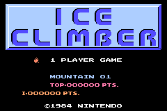

Famicom Mini 03 - Ice Climber (Japan) (En)
EEPROM 64K Save Format Mapped (Family Spec) 💾 MultiBoot 🎮 4P Link 📡 Wireless
Cartridge Identity
- Game Code
FICJ(FamilyFIC)- Header Title
ICE CLIMBER- Maker / Revision
01/ rev0- ROM Size
- 1.0 MiB (1,048,576 B)
- Save Media
EEPROM 64K- SHA-256
231935df9e0ddabb0b997459c6d582ef024dcd8e6e9ba5ba2b88aa62ee12f045
Screenshots


Niche & Rare Accessories
Detected niche/rare GBA accessory support: 🔌 Wireless Adapter (RFU_V1021).
Full 343-ROM corpus breakdown in the Cartridge Hardware & Niche Accessories Reference · auto-detected from ROM bytes via
gbakit inspect.
- Wireless Adapter (RFU_V1021)
- Nintendo Wireless Adapter (
AGB-015) SDKRFU_V1021+RFU-MBOOT
Link Cable & Multiplayer Communications
This title contains detected communication capabilities: 💾 MultiBoot 🎮 4P Link 📡 Wireless.
Detailed protocol specifications, SIO registers, Joybus commands, and MultiBoot sequences are documented in the Link & Multiplayer Reference.
- Multi-Player SIO (4P)
- 16-bit ring network · SIOCNT (
0x04000128) literals:0x00510c,0x005480,0x0055dc· SIODATA32/SIOMULTI0 (0x04000120) literals:0x000bcc,0x005424,0x005704 - Nintendo Wireless Adapter
- AGB-015 RFU driver signature
RFU-MBOOTat offset0x009c8c - Nintendo Wireless Adapter
- AGB-015 RFU driver signature
RFU-MBOOTat offset0x0147b8 - Nintendo Wireless Adapter
- AGB-015 RFU driver signature
RFU-MBOOTat offset0x01c5d0 - Nintendo Wireless Adapter
- AGB-015 RFU driver signature
NINTENDOSio32IDat offset0x009c98 - Nintendo Wireless Adapter
- AGB-015 RFU driver signature
NINTENDOSio32IDat offset0x01c5dc - Single-Cart MultiBoot
- Single-Cartridge MultiBoot (Download Play) client/server handler · Thumb SWI 0x25 (
0xDF25):0x0007a2,0x00d300· SDK signatures:MBOOTat0x009c90
Battery Save Format Specification (Family Shared)
This release shares its save architecture with canonical family reference Classic NES Series - Ice Climber (USA, Europe) (Family
FIC).
Open Family Save Format Spec (FICE)Download save-format.json
- Canonical Specification
FICE· 4 mapped fields · 0 verified checksum(s) · Confidence: HIGH- gbakit Built-In Support
- Built-in (FICE)
gbakit save verify FICE save.sav
gbakit save decode FICE save.sav
gbakit save fix FICE damaged.sav -o repaired.savObserved Battery Save Layout
- Fill Byte & Active Size
0x00fill · 512–512 / 8,192 B active (entropy 0.00 bits/B)- Active Offset Ranges
0x0–0x1FF(1 total)- ASCII Magic / Headers
- None detected
- Observed Variable Regions
- 0 bytes across 0 spans: None
- Candidate Checksum/Counter Spans
- None
Text, Fonts & Scene Data
- Primary Text Encoding
- Compressed / custom-encoded text
- Font & VWF Indicators
- No VWF Table No 1bpp Font · BIOS SWIs: BitUnPack
0x10:13· LZ770x11/12:13· Huffman0x13:8· RLE0x14/15:18 - Scene & Packaging
0ROM pointer tables (≥32 entries,0≥200) ·0relativeu32TOCs ·56OAM metasprite hits
Regional Variants & Revisions (Family FIC)
- Classic NES Series - Ice Climber (USA, Europe) (
FICE, 1 MiB) - Famicom Mini Collection (China) (En) (Proto) (
FICC, 4 MiB)